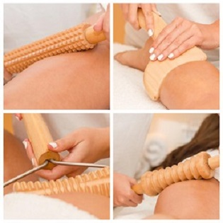

Madero terapija

Maderoterapija je popularna u svetu, a u poslednje vreme taj vid terapije ima sve više pristalica i kod nas. Reč je o tehnici masaže koja dolazi iz Kolumbije, a čiji je fokus na uklanjanje celulita drvetom. Maderoterpaija predstavlja dublji vid masaže uz pomoć koje se popravlja ravnoteža energije, nestaje stres i oslobađaju se mišići i zglobovi od bolova.
Temelji se na drevnoj orjentalnoj tehnici manipulacije drvetom koja se praktikuje vekovima, za različite svrhe, a namenjena je osobama sa disproporcionalnim, lokalizovanim masnim naslagama, viškom vode, toksinima u potkožnom tkivu, borama i celulitom.Ova masažna tehnika je vrhunska alternativa običnoj masaži za pacijentkinje sa vidljivim celulitom, jer izvanredno poboljšava proporcije tela i izgled kože na tretiranim predelima.
Ovaj postupak pomoću anatomski oblikovanih drvenih oklagija uništava nagomilane masnoće i toksine, a istovremeno unapređuje celokupno zdravlje. Terapija pomaže redefinisanju kontura tela, smanjuje celulit i olakšava gubitak težine. Drvene oklagije omogućavaju primenu pritiska koji pojačava raspad debelog i fibroznog celulita, kako bi se prirodno eliminisao zajedno sa drugim toksinima.
Prednosti:
- 100% prirodno, neinvazivno i bez kontraindikacija
- Opušta mišiće
- Podstiče limfnu drenažu
- Uklanja toksine
- Ubrzava metabolizam
- Uništava celulit
- opi masti
- Tonira i zateže kožu
tekst preuzet sa sajta:https://luftika.rs/sta-je-maderoterapija/